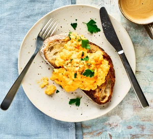

Scrambled Eggs

Ingredients
- 20g unsalted butter
- 4 eggs
- toast, buttered, to serve (optional)
Preparation
- Melt the butter in a non-stick frying pan over a medium-low heat until foaming. Whisk the eggs in a jug with a large pinch each of salt and ground black pepper.
- Once the butter is foaming, tip in the eggs and use a spatula to gently stir them around the pan until just set but not quite firm – they will continue to cook after you turn off the heat. Divide between two plates and serve with buttered toast, if you like.